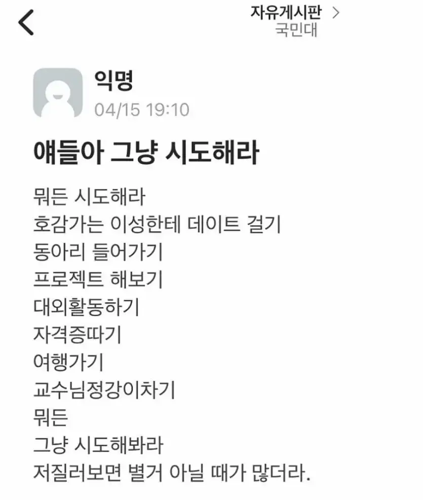

국민대는 교수 정강이를 찬다

국민대는 교수 정강이를 찬다
찢었다
아 에프(F)잖아!
오 좀 치는데?
원래 유명한 템플런임
그걸 활용 할줄 아는 자네에게 추천주겠네
교수실로 오게 할 얘기도 있고 커피나 한 잔 하세
쎄게 차면 개강해라는 소리 나오니까 힘 조절 주의
ㅋㅋㅋㅋㅋㅋㅋㅋㅋㅋㅋㅋㅋㅋㅋㅋㅋㅋㅋㅋㅋㅋㅋㅋㅋㅋㅋㅋㅋㅋㅋㅋㅋㅋㅋㅋㅋㅋㅋㅋㅋㅋㅋㅋㅋㅋㅋㅋㅋㅋㅋㅋㅋㅋㅋㅋㅋㅋㅋㅋㅋㅋㅋㅋㅋㅋㅋㅋㅋㅋㅋㅋㅋㅋㅋㅋㅋㅋㅋㅋㅋㅋㅋㅋㅋㅋㅋㅋㅋㅋㅋㅋㅋㅋㅋㅋㅋㅋㅋㅋㅋ 첨보는데 개처웃기네 ㅋㅋㅋㅋㅋㅋㅋㅋㅋㅋㅋㅋㅋㅋㅋㅋㅋㅋㅋㅋㅋㅋㅋㅋㅋㅋㅋㅋㅋ
개추
국민대여신되기 너도 할 수 있다
???: 그.. 영치금 좀 ㅎㅎ
"아악! 정강(종강)이야!" 소리 들을려고